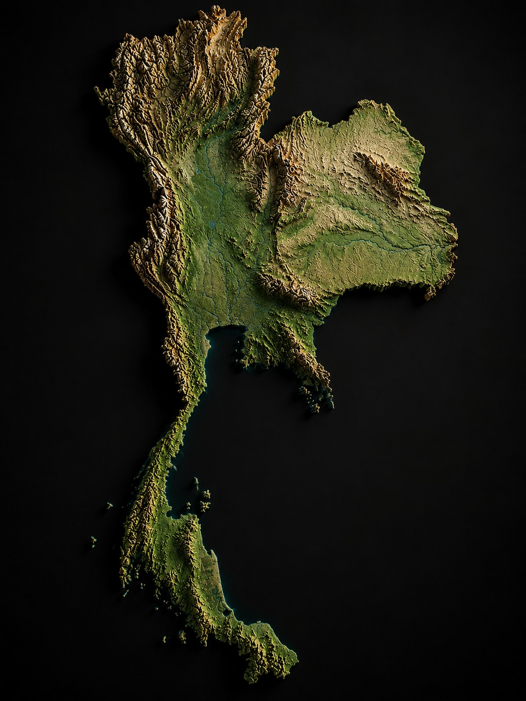

Track your habits, learning and wellness in one place — and earn real rewards for every day you show up. Consistency, gamified and accounted for.

You open DAOasis.
Your steps are logged, just like any other wellness app.
But here, they are not simply numbers on a screen.
They take you somewhere.
Not towards another badge.
Not towards another meaningless streak.
Towards somewhere real.
Your progress becomes a journey across Thailand.
Complete quests.
Build healthier habits.
Learn something new.
Show up consistently.
Every action moves your journey forward.
You are learning.
You are moving.
You are building consistency.
And the app recognises the effort you are putting in.
Your daily actions become meaningful progress.
Not because you clicked a button.
Not because you opened the app.
Because you actually did something.
Move. Learn. Complete. Contribute.
Earn Reward Credits for the progress you make.
A journey.
A challenge.
A system that keeps you moving forward.
And you are not just watching your progress.
You are living it.
A place where wellness becomes a journey.
Where learning becomes progress.
Where consistency becomes reward.
And where the distance between where you are and where you want to be is measured one step at a time.
Everything you track shapes the environment around you.

Everything else happens quietly.
The DAOasis community walks the journey with you. A shared marker moves south with your collective steps. Your consistency affects everyone's world — and theirs affects yours.
Weekly community quests require collective action to complete. The campfire grows when the community shows up. Your individual contribution is always visible — and always valued.
Phuket, Thailand. The DAOasis Sanctuary is the physical destination your daily habits are walking toward.
A member who has spent 150 days walking to Phuket in the app does not arrive as a stranger. They know the routines, the community, and the philosophy. The app prepared them. The Sanctuary deepens it. The app carries it home.
Reward Credits earned through daily participation contribute toward a Sanctuary stay. The digital journey and the physical one are the same journey.
Every completed quest, community check-in, learning module, and consistent streak earns Reward Credits — the in-app recognition layer that reflects genuine participation.
Reward Credits are not a cryptocurrency. They are the app's way of acknowledging that you showed up — and making that mean something.
DAOasis connects with your existing health platforms so the data does the work — you just live your life.
Join a community building better habits, one deliberate day at a time.
Join the Waitlist